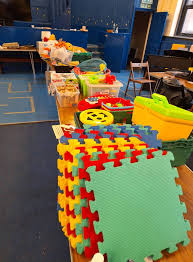

Corporate e-Waste Recycling
We provide scheduled pickups, asset inventory and full recycling services for large and small organisations. Compliance documentation provided.
Comprehensive e-waste services tailored for corporations, communities and individuals.
We provide scheduled pickups, asset inventory and full recycling services for large and small organisations. Compliance documentation provided.
We safely destroy data-bearing devices using methods that meet industry standards and issue certificates for audit trails.

Partner with local centres to create safe, convenient places for residents to dispose of old electronics responsibly.

Usable devices are refurbished and donated to educational projects or local charities, extending device lifecycles.